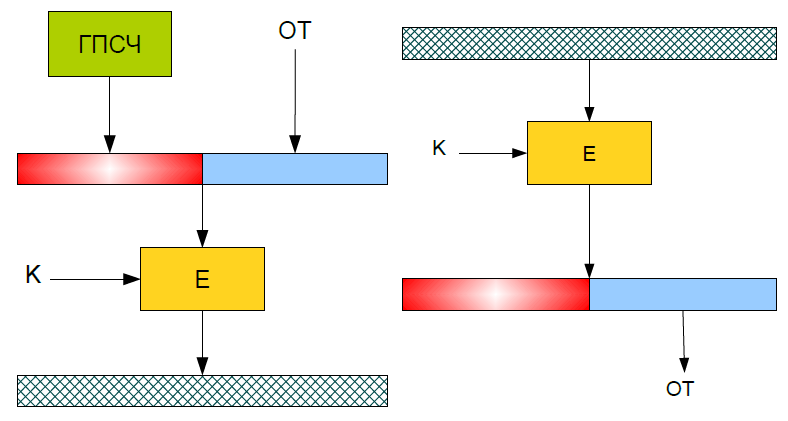
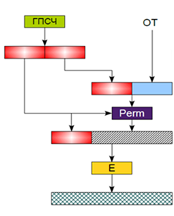
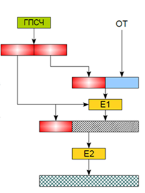
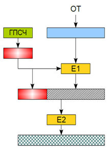

Одним из вариантов добавления вероятностного механизма к уже существующему шифру является подмешивание случайных данных к открытому тексту. Путем изменения соотношения случайных данных и шифртекста можно управлять стойкостью итоговой схемы шифрования. Чем больше объем случайных данных, тем выше стойкость, но меньше скорость шифрования. Датчик псевдослучайных чисел в данной схеме должен быть криптографически стойким и недоступным для изменения и управления извне шифрующего устройства.
Применение такой схемы позволяет защитить алгоритм от большинства классических методов криптоанализа.
Преимущества данной схемы:
1) возможность применения с уже существующими шифрами;
2) возможность управления стойкостью.
Недостаток: увеличение размера шифртекста.
Простейший пример добавления случайных данных приведен на рис. 4.1. В нем случайные данные составляют половину блока открытого текста. При расшифровании эта половина отбрасывается, т. е. размер полезных данных уменьшается вдвое. Эта схема хоть и подмешивает случайные данные в шифртекст, но при этом позволяет сделать предположение о том, какое значение может иметь правый подблок открытого текста.
 |
Рис. 4.1. Постой вариант добавления случайных данных к открытому тексту |
Чтобы это стало невозможным, используется схема, приведенная на рис. 4.2. В ней генерируется две части случайных данных. Одна из них подмешивается к данным, вторая служит ключом для выполнения случайной перестановки бит открытого текста, состоящего из случайных данных и полезных данных. Случайная часть, используемая для перестановки, присоединяется к открытому тексту и все это зашифровывается. В данной схеме невозможно предположить где находятся биты открытого текста и где биты шифртекста. При этом доля полезных данных в блоке уменьшается более чем на 50%, предположительно до 25−30%. Кроме этого, недостатком данной схемы является то, что данные смешиваются с помощью линейной операции.
 |
Рис. 4.2. Схема вероятностного шифрования с перемешиванием битов |
Заменяя в данной схеме операцию управляемой перестановки на предварительное шифрование, получим схему с двумя операциями шифрования (рис. 4.3).
 |
Рис. 4.3. Схема вероятностного шифрования |
В данной схеме достигается гораздо большая стойкость, чем в предыдущей, но при этом требуется использование двух алгоритмов шифрования с разной длиной блока, что не всегда удобно в практической реализации. Тем не менее, в данной схеме вместо простой перестановки, которая является линейной операцией, на выходе получается сложная нелинейная зависимость всех бит шифртекста от всех бит открытого текста, ключа и случайных данных. Это полностью исключает применение традиционных методов криптоанализа, так как невозможно получить данные нужного вида, надежно упрятанные между двумя алгоритмами шифрования. Данный алгоритм имеет высокую стойкость, но такой же стойкости можно достичь при менее сложной схеме шифрования. Схема, аналогичная по стойкости, но менее сложная в реализации приведена на рис. 4.4. Назовем ее оптимальной.

Рис. 4.4. Оптимальная схема вероятностного шифрования |